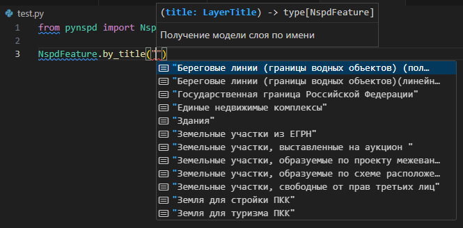
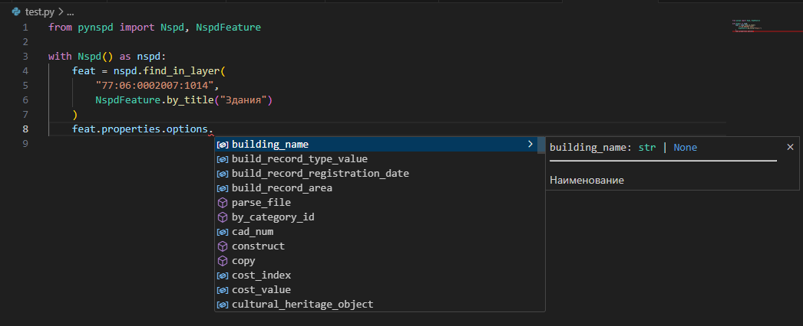
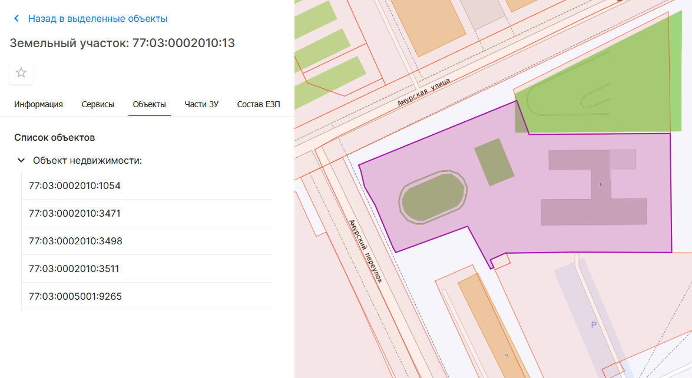

Руководство пользователя
Создание клиента
Вся работа с API НСПД происходит через объект клиента. Рекомендуется работать с ним через контекстный менеджер:
Благодаря контекстному менеджеру сессия завершится корректно, очистив все активные подключения.
Другой способ - создать объект клиента и в конце работы завершить сессию напрямую:
Подробнее о настройке клиента читайте здесь.
Поиск объектов
По поисковому запросу
НСПД предоставляет два вида поиска объектов - по виду объекта и по слою.
По виду объекта
from pynspd import ThemeId
feat = nspd.find("77:05:0001005:19", ThemeId.REAL_ESTATE_OBJECTS)
print(feat.properties.options.land_record_type)
#> Земельный участок
По слоям
feat = nspd.find_in_layer(
"77:06:0002007:1014",
NspdFeature.by_title("Здания")
)
print(feat.properties.options.floors)
#> 5
Если вы работаете в современной IDE (VS Code, PyCharm и т.д.), то она сама подскажет вам доступный список слоев (автоматически или после сочетания клавиш Ctrl+Пробел):

Кроме того этот метод приводит ответ от НСПД к статическому типу и мы можем проверить доступные поля:

Подробнее о типизации ответов читайте в этой статье.
Немного подробнее про фильтрацию в .find
.find не просто выдает оригинальную поисковую выдачу из НСПД, а гарантирует,
что запросу соответствует только один результат.
В это входит как и простая распаковка массива с одним результатом, так и более комплексные проверки.
Если быть точнее: что поисковой запрос действительно присутствует в ответе и
НСПД не галлюцинирует (например, запрос 77:1:3033:1031 возвращает данные по к/н 02:54:000000:81),
а так же напрямую относится к объекту (например, исключает помещения, включенные в ответ по зданию)
Расширенный поиск
Если вам нужно получить поисковую выдачу, аналогичную НСПД (например, для поиска по адресу),
методы .find вам могут не подойти из-за их строгой фильтрации. Вместо этого воспользуйтесь метод .search(...):
feats = nspd.search('Москва Новочерёмушкинская улица 24 корпус 1')
print(feats)
#> [ NspdFeature<Здания: 77:06:0004001:1042>,
#> NspdFeature<Помещения: 77:06:0002011:1040>,
#> NspdFeature<Помещения: 77:06:0002013:1204>,, ...]
Как и в предыдущих примерах, вы можете уточнить слой для поиска:
feats = nspd.search_in_layer(
'Москва Новочерёмушкинская улица 24 корпус 1',
NspdFeature.by_title("Здания")
)
print(feats)
#> [NspdFeature<Здания: 77:06:0004001:1042>]
А также производить поиск по нескольким слоям сразу:
feats = nspd.search_in_layers(
'Обнинск',
NspdFeature.by_title("Муниципальные образования (полигональный)"),
NspdFeature.by_title("Населённые пункты (полигоны)")
)
print(feats)
#> [NspdFeature<Муниципальные образования (полигональный)>, NspdFeature<Населённые пункты (полигоны)>]
Форматируйте адрес перед запросом
НСПД довольно строг к формату адреса, поэтому пробуйте разное написание, если первоначальный не дал результат:
Москва Новочер -> емушкинская ул. 24Москва Новочерёмушкинская ул. 24
Москва Бориса Галушкина ул. 14 -> к. 1Москва Бориса Галушкина ул. 14 корпус 1
Москва -> 9-я Рота ул. 15Москва Девятая Рота ул. 15
В точке
from shapely import Point
layer_def = NspdFeature.by_title("Земельные участки из ЕГРН")
feats = nspd.search_at_point(Point(37.546440653, 55.787139958), layer_def)
print(feats[0].properties.options.cad_num)
#> "77:09:0005008:11446"
Tip
Если вы не хотите использовать shapely.Point, вы можете использовать метод .search_at_coords(lat, lng, layer_def).
Обратите внимание, что в географических координатах сначала идет широта, т.е. lat=y
Аналогично поиску по слою, ответ будет приведен к статическому типу.
В контуре
from shapely import from_wkt
contour = from_wkt(
"Polygon ((37.62381 55.75345, 37.62577 55.75390, 37.62448 55.75278, 37.62381 55.75345))"
)
feats = nspd.search_in_contour(
contour,
NspdFeature.by_title("Земельные участки из ЕГРН"),
)
cns = [i.properties.options.cad_num for i in feats]
print(cns)
#> ["77:01:0001011:8", "77:01:0001011:14", "77:01:0001011:16"]
Аналогично поиску по слою, ответ будет приведен к статическому типу.
Данный метод передает ответ НСПД "как есть". Это значит, что если площадь поиска слишком большая,
будет вызвана ошибка TooBigContour. Однако, вы можете воспользоваться генератором .search_in_contour_iter(...),
который обходит известные ограничения:
for i in nspd.search_in_contour_iter(
contour,
NspdFeature.by_title("Земельные участки из ЕГРН"),
only_intersects=True, # по умолчанию метод ищет все объекты
# в bounding box контура для экономии ресурсов
):
print(i.properties.options.cad_num)
Работа с геометрией
Исходный формат ответов по объекту от НСПД - GeoJSON.
Системы коодинат
Несмотря на то, что НСПД может в разных ситуациях ответить в разных системах координат, pynspd всегда приводит систему коодинат геометрии в EPSG:4326.
По этой же причине все методы, работающие с геометрией, ожидают, что она будет в СК EPSG:4326.
Однако, если нам необходимо производить геометрические операции, он не совсем подходит. Поэтому pynspd предоставляет возможность конвертировать геометрию в формат shapely:
Или же сразу в мультигеометрию (что может быть удобно для сохранения в базу данных, вроде PostGIS):
Участки без координат границ
Попытка приведения объекта без координат границ к мультитипу приведет к ошибке. Вы можете заранее проверить наличие координат по свойству feat.properties.options.no_coords
Работа со свойствами
Свойства объекта лежат в свойстве .properties:
feat = nspd.search_in_layer(
'63:01:0810003:510',
NspdFeature.by_title("Земельные участки из ЕГРН")
)
print(feat.properties.model_dump().keys())
#> ['category',
#> 'category_name',
#> 'options',
#> 'system_info',
#> ...]
Что за .model_dump()?
Все результаты pynspd является pydantic-моделями.
Фактически это значит, что pynspd возвращает дата-класс,
прошедший предварительную валидацию.
Для конвертации pydantic-модели в словарь используется метод .model_dump()
Как можно заметить, здесь нет информации о самом объекте - дело в том, что НСПД передает ее во вложенном поле .options
print(feat.properties.options.model_dump().keys())
#> ['cad_num',
#> 'readable_address',
#> 'specified_area',
#> 'declared_area',
#> 'cost_value',
#> ...]
Также вы можете сразу получить словарь с названиями из карточки НСПД:
print(feat.properties.cast().options.model_dump_human_readable().keys())
#> ['Кадастровый номер',
#> 'Адрес',
#> 'Площадь уточненная (кв. м)',
#> 'Площадь декларированная (кв. м)',
#> 'Площадь (кв. м)',
#> 'Кадастровая стоимость (руб.)',
#> ...]
Приведение типа объекта
Если вас заинтересовало, почему используется метод .cast(),
вы можете узнать об этом в статье "Типизация ответов"
Получении информации из вкладок
Часть информации об объекте доступна только в отдельных вкладках:

Для получения этой информации при помощи pynspd, нужно:
- Получить объект любым вышеописанным способом;
- Вызвать метод
nspd.get_tab_data(feat, tab_name), где: feat- объект из пункта 1;tab_name- имя вкладки с НСПД (как и с именем слоя, будет доступна подсказка от IDE)
Вы также можете вызвать метод для сбора данных со вкладки напрямую, не передавая имя вкладки:
nspd.tab_land_parts(...)- Части ЗУnspd.tab_land_links(...)- Связанные ЗУnspd.tab_permission_type(...)- Виды разрешенного использованияnspd.tab_composition_land(...)- Состав ЕЗПnspd.tab_build_parts(...)- Части ОКСnspd.tab_objects_list(...)- Объекты